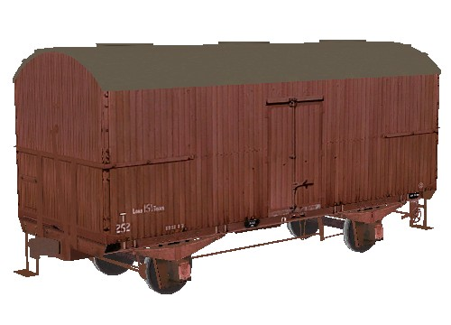

T 4-Wheeled Ice Vans (VR) for MSTS
original 3d model design and textures by James Brook
Overview
Four vans are available:
- T 154: short 4-wheeled wooden van
- T 252: 4-wheeled wooden van (converted from 6-wheeled van);
- T 457: 4-wheeled steel sheathed ice van;
- TP 5: 4-wheeled wooden van converted to bogie operation.
